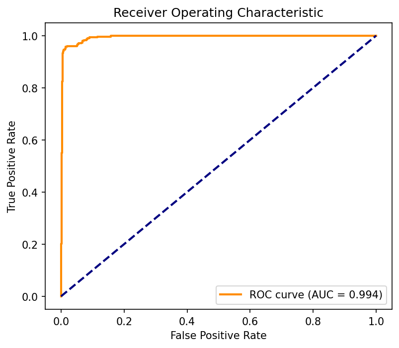
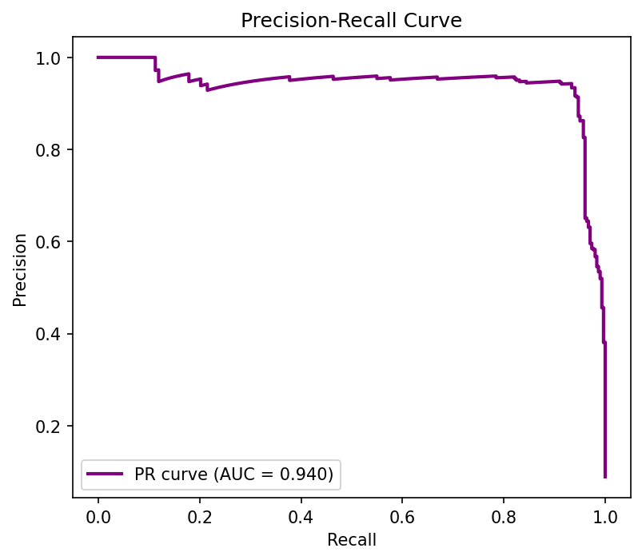
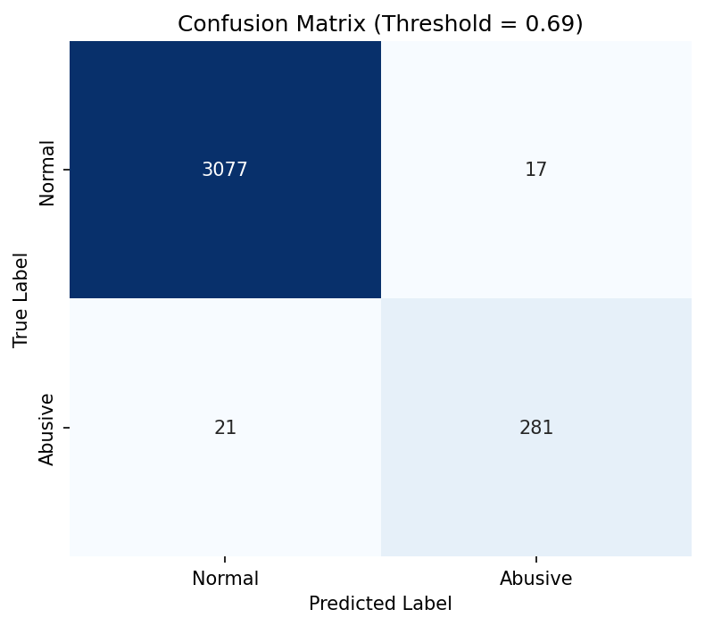
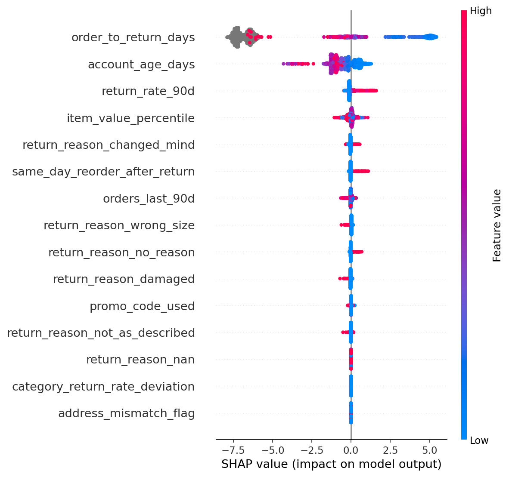

RECIDIAN is strictly defense-only. It acts as an API interceptor listening to Razorpay's Test servers, intercepting the /v1/refunds payload, synthesizing historical velocity, and returning a SHAP-explained verdict in <2 seconds.
Because real fraud datasets are illegal to distribute, we reverse-engineered 20,400+ transactions adhering strictly to Razorpay's JSON API schema using four strict behavioral archetypes.
The 4 Archetypes: Normal (Low returns), Loyal High-Frequency (High buys, High returns), Wardrobers (High-value returns only), and Promo Abusers (Instant returns).
Distributions validated against NRF 2024 retail benchmarks: fashion returns 28-35%, electronics 7-12%. Our Wardrober archetype (40-70% return rate) matches documented wardrobing behavior. The Loyal High-Frequency hard negative was explicitly engineered to prevent trivial single-feature threshold separation — an 80% return rate scores LOW risk when paired with 22 orders/month and a 730-day account age. No real customer data was used or scraped.
We trained an XGBoost classifier on an 80/20 held-out test set. The model achieved exceptional class separation, proving highly resilient against class imbalance (PR-AUC 0.940).




Standard ML projects optimize for arbitrary accuracy. We optimized for the merchant's bank account. We assigned a financial penalty to False Positives (insulting a good customer) and False Negatives (shipping cost + loss), and swept 100 thresholds.
The mathematical minimum cost (₹36,550) occurred exactly at Threshold = 0.69. That is the engine's core constraint.
Every risk decision is accompanied by a mathematically rigorous explanation. We use SHAP TreeExplainer to decompose each XGBoost prediction into per-feature contributions — no LLM hallucinations, no black boxes.
Razorpay's Track 02 requires defense-only systems. When a merchant disputes a blocked refund, they need a legally defensible reason — not "the model said so." SHAP tells them exactly: "return_rate_90d = 0.75 increased risk by +0.312, account_age_days = 45 increased risk by +0.187."